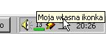

| << TreeView Spis Strona g³ówna W³asne kontrolki, cz. 1 >> |
Na pasku zadañ Windowsa jest taki fajny obszar, zwany obszarem statusu (a popularnie - tray'em). Znajduj¹ siê tam najczêœciej ikonki programów dzia³aj¹cych w tle. Pewnie nieraz zastanawia³o ciê, jak siê dobraæ do tego miejsca:
Dziêki temu artyku³owi stanie siê to proste ;-). Wszelkie zadania zwi¹zane z ikonkami w tray'u (dodawanie, modyfikowanie, usuwanie) wykonuje funkcja Shell_NotifyIcon. Jej sk³adnia jest bardzo prosta, pobiera ona tylko rodzaj operacji do wykonania oraz adres struktury typu NOTIFYICONDATA. Struktura ta zawiera wszystkie niezbêdne informacje o ikonce. W plikach nag³ówkowych naszego SDK zadeklarowana ona jest nastêpuj¹co:
|
typedef struct _NOTIFYICONDATA { DWORD cbSize; HWND hWnd; UINT uID; UINT uFlags; UINT uCallbackMessage; HICON hIcon; char szTip[64]; } NOTIFYICONDATA, *PNOTIFYICONDATA; |
Przeznaczenia wiêkszoœci tych pól nietrudno siê domyœliæ. Podobnie jak w przypadku innych struktur charakterystycznych dla WinAPI, pole cbSize nale¿y ustawiæ na rozmiar struktury, pobrany operatorem sizeof. Jako hWnd podajemy uchwyt okna, które bêdzie otrzymywa³o komunikaty zwi¹zane z ikonk¹ - zazwyczaj jest to g³ówne okno naszego programu. Pole uID to identyfikator ikonki, zaœ uFlags bêdzie okreœla³o, które z pozosta³ych trzech pól struktury s¹ w danym momencie aktywne.
Bierzmy siê zatem do dzie³a, czyli do umieszczenia ikony naszego programu na tray'u. Najpierw, jak zwykle, wype³nimy strukturê:
|
LPSTR sTip = "Moja w³asna ikonka"; NOTIFYICONDATA nid; nid.cbSize = sizeof(NOTIFYICONDATA); nid.hWnd = hwnd; nid.uID = ID_TRAY1; nid.uFlags = NIF_ICON | NIF_MESSAGE | NIF_TIP; nid.uCallbackMessage = CMSG_TRAY1; nid.hIcon = LoadIcon(NULL, IDI_APPLICATION); lstrcpy(nid.szTip, sTip); |
Teraz niezbêdne wyjaœnienia. U¿yliœmy wszystkich trzech mo¿liwych flag, ¿eby za jednym zamachem ustawiæ ikonkê, tooltipa (czyli napis, który siê wyœwietla po najechaniu na ikonkê mysz¹) oraz kod specjalnego komunikatu (o nim póŸniej). Oczywiœcie sta³e ID_TRAY1 oraz CMSG_TRAY1 musimy sobie sami zdefiniowaæ:
|
#define ID_TRAY1 601 #define CMSG_TRAY1 0x8001 |
Twórcy Windowsa nie byliby sob¹, gdyby od czasu do czasu nie zrobili programistom jakiegoœ kawa³u, i oto mamy go - pole szTip nie jest wskaŸnikiem (jak w przypadku wiêkszoœci tego typu pól w WinAPI), lecz tablic¹ o sta³ym rozmiarze64 znaków, dlatego wype³niamy j¹ przy pomocy funkcji lstrcpy.
Wreszcie ostatnia rzecz: zak³adam, ¿e powy¿sza struktura bêdzie wype³niana ju¿ PO utworzeniu g³ównego okna programu, o uchwycie hwnd. Zak³adam równie¿, ¿e wincl to nazwa struktury typu WNDCLASSEX, która by³a u¿yta do rejestracji klasy okna i zawiera poprawny uchwyt do ikony.
Po tych przygotowaniach mo¿emy wreszcie dodaæ ikonê do obszaru statusu:
|
BOOL r; r = Shell_NotifyIcon(NIM_ADD, &nid); if(!r) MessageBox(hwnd, "No niestety, z ikonki nici...", "£eeee...", MB_ICONEXCLAMATION); |
Wszystko piêknie, ikonka widnieje sobie na tray'u:

Trochê nam siê co prawda pokaszani³a ta ikona, ale dziêki temu mamy nauczkê na przysz³oœæ: jeden z kolorów jest najwyraŸniej u¿ywany jako kolor maski, wiêc nale¿y siê liczyæ z tym, ¿e na tray'u nie bêdzie go widaæ.
Poza tym drobiazgiem wszystko jest jednak OK. Zadbajmy jeszcze o to (programiœci lubi¹ sobie o tym zapominaæ), ¿eby nasza ikonka samoczynnie usuwa³a siê w momencie zniszczenia g³ównego okna:
|
case WM_DESTROY: { NOTIFYICONDATA nid; nid.cbSize = sizeof(NOTIFYICONDATA); nid.hWnd = hwnd; nid.uID = ID_TRAY1; nid.uFlags = 0; Shell_NotifyIcon(NIM_DELETE, &nid); PostQuitMessage(0); } break; |
Oczywiœcie w przypadku usuwania ikony nie musimy zawracaæ sobie g³owy polami hIcon, uCallbackMessage i szTip, dlatego te¿ ustawiliœmy uFlags na 0. Teraz ikonka bêdzie znika³a po wyjœciu z programu (wczeœniej dzia³o siê to dopiero po najechaniu na ni¹ mysz¹).
Teraz pora zaj¹æ siê praktyczniejszym wykorzystaniem takich ikonek. Jak wiadomo, zwykle klikniêcie prawym przyciskiem myszy na takiej ikonce rozwija menu kontekstowe, z którego mo¿na wybraæ pewne opcje programu (np. w WinAmp-ie mo¿na w ten sposób w³¹czyæ lub zatrzymaæ odtwarzanie, zmieniaæ skórki i wtyczki oraz wiele innych rzeczy). Zwykle te¿ pojedyncze klikniêcie lewym przyciskiem przywo³uje program na pierwszy plan (jeœli wczeœniej dzia³a³ on w tle). My zrobimy sobie to ostatnie; sprawimy, ¿e po zminimalizowaniu naszego g³ównego okienka bêdzie ono znika³o z g³ównego obszaru paska zadañ i pojawia³o siê w tray'u.
Przede wszystkim musimy teraz sprawiæ, ¿eby po zrzuceniu do paska zadañ okienko znika³o z niego. Pomo¿e nam w tym znana nam dobrze funkcja ShowWindow. Umieœcimy j¹ w czêœci kodu odpowiedzialnej za obs³ugê komunikatu WM_SIZE. Tam bêdziemy sprwdzaæ, czy okienko jest minimalizowane (wtedy wywo³amy ShowWindow z parametrem SW_HIDE), czy nie:
|
case WM_SIZE: { if(wParam == SIZE_MINIMIZED) { ShowWindow(hwnd, SW_HIDE); // 1 } else { ShowWindow(hwnd, SW_SHOW); // 2 } } break; |
W miejscach oznaczonych komentarzami wstawiamy ponadto: 1) kod dodaj¹cy ikonkê do tray'a, 2) kod usuwaj¹cy tê ikonkê. Warto zwróciæ uwagê, ¿e kod usuwaj¹cy ikonkê z tray'a powinien wyst¹piæ zarówno w powy¿szym, oznaczonym miejscu, jak i tam, gdzie wstawialiœmy go wczeœniej, czyli w obs³udze komunikatu WM_DESTROY, przy czym w tym drugim miejscu musimy teraz sprawdziæ, czy okno jest zminimalizowane (bo tylko wtedy bêdzie sens usuwania ikony). Tak wiêc komunikat WM_DESTROY bêdziemy teraz obs³ugiwaæ tak:
|
case WM_DESTROY: { if(IsIconic(hwnd)) { // <-- tutaj wklej kod usuwaj¹cy ikonê z tray'a } PostQuitMessage(0); } break; |
Nowoœci¹ jest funkcja IsIconic, która sprawdza, czy okno jest zminimalizowane - tylko wówczas pokazywana jest w naszym programie ikonka na tray'u. Równie dobrze moglibyœmy w tym przypadku u¿yæ funkcji IsWindowVisible.
Teraz pora na pozosta³¹ czêœæ zadania - obs³u¿enie klikniêcia na ikonce. Do tej pory bowiem po zminimalizowaniu naszego okna nie da³o siê ju¿ bez stosowania tzw. cudów przywróciæ do normalnego stanu - mogliœmy jedynie wcisn¹æ Ctrl+Alt+Del i wykopaæ program z pamiêci si³¹. Teraz sprawimy, by klikniêcie na ikonê sprowadza³o okno z powrotem na pulpit.
Wykorzystamy w tym celu zdefiniowany przez nas komunikat CMSG_TRAY1. Dlaczego nadaliœmy jej akurat tak¹ wartoœæ? ¯eby nasz komunikat da³o siê odró¿niæ od tych systemowych - wszystkie numery od 0x8000 do 0xBFFF s¹ do dyspozycji u¿ytkownika jako "prywatne" komunikaty do u¿ytku wewn¹trz danej aplikacji.
Pozostaje nam teraz jedynie obs³u¿enie klikniêcia na naszej ikonce. Parametr wParam komunikatu CMSG_TRAY1 bêdzie zawiera³ identyfikator ikonki (w naszym przypadku ID_TRAY1), natomiast lParam - rodzaj komunikatu (w przypadku klikniêcia lewym przyciskiem - np. WM_LBUTTONDOWN). Obs³uga mo¿e wygl¹daæ jakoœ tak:
|
case CMSG_TRAY1: { if(wParam == ID_TRAY1) if(lParam == WM_LBUTTONDOWN) ShowWindow(hwnd, SW_RESTORE); } break; |
Wa¿ne jest tutaj sprawdzenie, od której ikonki pochodzi komunikat (jeœli dodaliœmy kilka ikon; od "obcych" ikon komunikaty nie przychodz¹) oraz jakie zdarzenie nam oznajmia. Szczególnie na to drugie nale¿y zwróciæ uwagê; gdybyœmy nie sprawdzili wartoœci lParam, to nasze okno pojawia³oby siê nawet po samym najechaniu mysz¹ na ikonê (co jest efektem raczej niepo¿¹danym).
| << TreeView Spis Strona g³ówna W³asne kontrolki, cz. 1 >> |